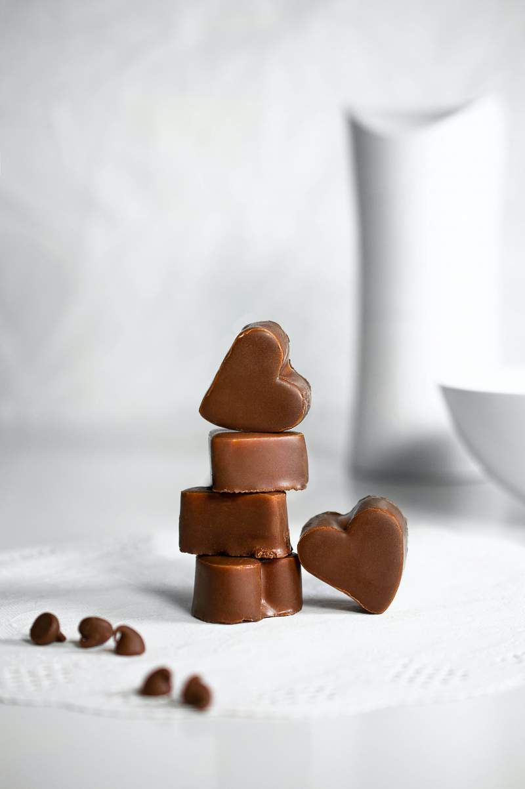

Брауни с протеином
Брауни — шоколадный классический десерт, который американские хозяйки всех поколений делали и продолжадт делать на семейные вечера. Причин тому несколько: он вкусный, простой, нравится детям и взрослым, и самая важная – никогда не надоедает.
Главный секрет шоколадного чуда – текстура. Многие могут утверждать, что брауни – это просто порезанный на кусочки шоколадный пирог. Но американцы так не думают.
Готовя брауни, нужно добиться чуть пористой (но не пышной), плотной и влажной структуры теста, чтобы на выходе получить что-то похожее на пористый чудь подтаявший шоколад.
Пирожное брауни – это намного больше какао и меньше муки, чем в рецептурах кексов и тортов. А еще – немало сахара. Именно такое сочетание ингедиентов делает текстуру и вкус десерта совершенно отличным от других видов шоколадной выпечки. Американцы любят дополнить десерт крупно порубленными орехами пекан или миндалем.
Ингредиенты:
- Шоколад темный с протеином «Sweet.store» 180 гр.
- Масло сливочное 180 гр.
- Яйца 3 шт.
- Мука 75 гр.
- Сахар 300 гр.
- Соль 1/4 ч. ложки.
Способ приготовления:
- Масло и шоколад с протеином нужно растопить, для этого шоколад ломаем кусочками и кладем его вместе с маслом в емкость, в которой будем их растапливать. Растапливаем шоколад и масло на водяной бане.
- Берем яйца, моем и выбиваем в емкость для взбивания. Туда же добавляем сахар и соль. Перемешиваем яйца с солью и сахаром до однородного состояния и полного растворения сахара и соли. Тут даже не обязательно использовать миксер, можно перемешивать все обычным венчиком или даже просто вилкой.
- Добавляем к яичной массе остывшую шоколадно-масляную смесь, перемешиваем. Просеиваем сюда же муку и снова перемешиваем до однородного состояния.
- Форму для выпечки застилаем пергаментом и вылтиваем в нее наше тесто. Выпекаем наше пирожное 30-35 минут в разогретой до 175°. По желанию можно полить готовое пирожное растопленым темным шоколадом с протеином.
Приятного аппетита! ❤
Шоколадные конфеты «Сердечки»
Все мы любим шоколадные конфеты ещё с детства. Именно этот десерт напоминает уютные посиделки в кругу родных и близких. Мы предлагаем Вам приготовить шоколадные конфеты в виде сердечек по нашему рецепту! Уверяем, Вы не останетесь равнодушными!
Ингредиенты
- Любой шоколад «Sweet.store» (кроме темного с протеином)
- По желанию можно взять кондитерские присыпки для украшения
Способ приготовления
- Шоколад поломайте на маленькие, примерно одного размера, кусочки.
- 2/3 приготовленного шоколада поместите в насухо вытертую емкость и поставьте растапливаться на паровой бане при небольшом огне.
- Постоянно перемешивайте начавший плавиться шоколад.
- Следите за температурой растапливающейся массы. Как только она достигнет нужных 45-50 градусов, снимайте с огня.
- Теперь нужно опустить температуру шоколадной массы до соответствующей каждому виду шоколада (горького, молочного, белого). Для этого высыпьте оставшуюся треть шоколада в горячую массу и перемешивайте до полного растворения и получения однородной консистенции.(
- Разлейте шоколадную массу в формочки–сердечки, которые также должны быть насухо вытертыми.
- Постучите по бокам формочек, чтобы вышли пузырьки воздуха из массы.
- Отправьте будущие конфеты для застывания в холодильник минут на 15.
- После этого аккуратно выньте сладости из формочек.
- Декорируйте готовые конфеты кондитерскими посыпками или полейте растопленным шоколадом другого цвета, например, конфеты из горького – белым.
Приятного аппетита ❤
Шоколадное мороженое
Это наивкуснейшее шоколадное мороженое заставит Вас влюбиться в него. А готовится оно проще некуда!
Ингедиенты
- Яичные желтки 3 шт.
- Любой шоколад «Sweet.store» 200 гр.
- Молоко 3,2% 263 мл.
- Сливки 33-35% 188 мл.
- Сахар 75 гр.
Способ приготовления
- В сотейнике соединяем молоко и сливки, доводим смесь до кипения. За это время рубим 150 гр. шоколада.
- Молочная смесь закипела, добавляем в нее шоколад и венчиком перемешиваем, пока не получится однородное «шоколадное молоко»
- В это время желтки соединяем с сахаром и взбиваем их до пушистой белдой массы. Не прекращая взбивать, скорость миксера переводим на минимум, и тонкой струйкой вливаем во взбивающиеся желтки наше «шоколадное молоко».
- Получившуюся смесь переносим снова в сотейник и, постоянно помешивая венчиком, на медленном огне доводим температуру смеси до 84°С. Советуем использовать кулинарный термометр. Если его нет, можно варить готовить крем (а это получается классический английский крем), но тут есть риск, что смесь передержите на огне и желтки свернутся. Если все сделано правильно, получается однородный, слегка густой шоколадный крем. Оставляем его остывать сначала при комнатной температуре, затем в холодильнике 3 — 5 часов.
- Достаем мороженицу и включаем ее, подготавливаем емкость для замораживания.
- Мелко рубим оставшиеся 50 гр. шоколада и добавляем в холодную смесь, перемешиваем венчиком.
- Далее действуем согласно инструкции к вашей мороженице. Мы просто переносим крем в чашу, мешалка все время работает. Через 10 — 15 мин. смесь станет очень густой.
- Выключаем прибор, смесь перекладываем в емкость для замораживания и ставим в холодильник минимум на 8 — 10 часов.
- Перед подачей контейнер с мороженым держим при комнатной температуре 10 — 15 минут, можно формировать шарики и угощаться.